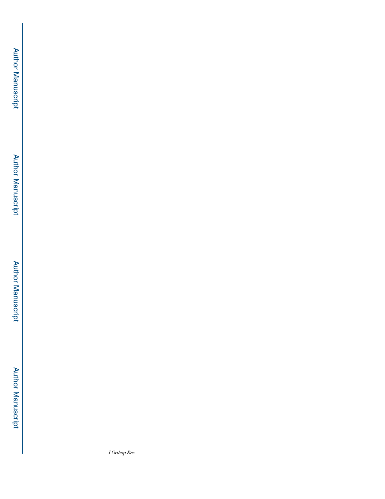

Tomizawa et al.
Page 7
To assess biofilm formation on the implants 14 and 42-days post-op, we performed a region
of interest (ROI) quantitative SEM analysis of the explants (Fig. 5A, B). The results
confirmed significant biofilm formation in the USA300 group compared to the Sterile and
RP62A groups. Specifically, the percent biofilm area of the USA300 group (39.0 ± 13.7 %)
was significantly larger than the Sterile (6.3 ± 2.3 %; p = 0.03) and RP62A (12.9 ± 7.4 %; p
= 0.03) groups on day 14. Moreover, there was no significant difference in biofilm formation
between RP62A infected and Sterile implants at this time point (p = 0.18). To assess whether
this difference was owing to the slow growth of RP62A biofilm, we determined the percent
biofilm area on day 42 post-op, which produced the same results. At this late time point, the
% biofilm area of USA300 (37.7 ± 10.2 %) was still significantly larger than that of the
Sterile (5.7 ± 4.3 %; p = 0.03) and RP62A (10.5 ± 3.1 %; p = 0.03) groups. Interestingly, the
amount of biofilm formed on the RP62A infected implants was equivalent to the host
material (cells and plasma proteins) adhered to Sterile implants, as determined by this ROI
assay.
To confirm the absence of bacteria on the Sterile implants, and their presence in the biofilm
on the RP62A and USA300 infected implants, we performed rigorous SEM assessments of
the explants (Fig. 5C). While no bacteria were found on Sterile implants, a small number of
cocci appeared together with the host components (i.e. fibrin) on both RP62A and USA300
infected implants. Additionally, this biofilm also contained empty lacunae, which is
evidence of extravasated bacteria from mature biofilm.21
To assess inflammation, bone resorption and bone formation, qRT-PCR analyses were
performed on the three groups of implanted tibiae. USA300 and RP62A infection
significantly induced an inflammatory transcriptome, as IL-1β, IL-6 and Tlr2 mRNA levels
were significantly increased compared to Sterile controls (Fig. 6). The infected tibiae also
had significantly increased RANKL levels, consistent with inflammation-induce
osteoclastogenesis, and the large numbers of TRAP+ cells observed in the histology.
Consistent with the osteolysis observed in USA300-infected tibiae, gene expression for
mature osteoclasts (CTSK) was increased, and bone formation gene expression (Col1a1)
was decreased, versus Sterile implant and RP62A challenged tibiae.
To assess the effects of RP62A infection on osseous integration of the implants in our
transtibial model, we performed biomechanical push-out testing on the three groups (Fig. 7).
The results demonstrated osseous integration in the Sterile group, as remarkable force to
push out the implants (17.3 ± 4.1 N), versus complete lack of bone integration in the
USA300 group, as minimal forces (0.68 ± 0.30 N) was required to remove the implants, as
expected based on the extensive osteolysis revealed by histology and μCT. Interestingly and
importantly, RP62A infected implants required significantly greater force (7.5 ± 3.4 N) to
remove from tibiae compared with the USA300 group (p < 0.001). However, the force to
push-out RP62A infected implant was also significantly less than that in the Sterile group (p
< 0.001), suggesting incomplete osseous integration as predicted by the histology and SEM
analyses.
J Orthop Res. Author manuscript; available in PMC 2021 April 01.